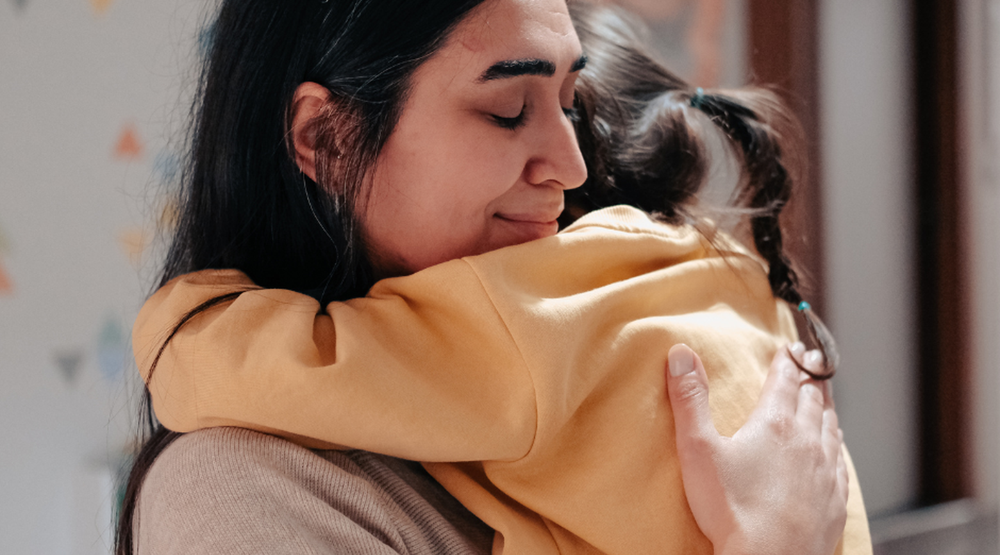

35 years of supporting survivors in Blackburn with Darwen
We support anyone who has experienced, or is at risk of experiencing, domestic abuse — through safe accommodation, practical support, advocacy and specialist advice.

Our story
The Wish Centre was founded in 1989 as Blackburn and Darwen District Women's Aid by local women who identified gaps in domestic abuse support services. We employed our first member of staff in 1990 and opened a refuge for women and children in 1991. In 1998, The Wish Centre was formally established as an expanded community base, and we've grown ever since.
Our mission
We work to promote safety, recovery and long-term independence for individuals and families. While domestic abuse can affect anyone, research shows it disproportionately impacts women and girls — we've been affiliated with Women's Aid Federation of England since the early 1990s, and we're committed to ensuring everyone who seeks help receives appropriate, tailored support.
Recognition & accreditation
- Investors in People
- Investing in Children accreditation
- Respect accreditation
- GSK Impact Award winner, April 2021
Registration
Registered charitable company limited by guarantee.
Company No. 5834929 · Charity No. 1116444.
What we offer
Refuge
Safe, self-contained accommodation for women and children.
IDVA service
Independent Domestic Violence Advisor support through crisis and beyond.
Outreach
Community-based support to sustain independence and tenancy.
Recovery programmes
Structured support for healing and rebuilding after abuse.
Counselling
Therapeutic support for survivors and their children.
Behaviour change programmes
Working with perpetrators to reduce harm and risk.
Our team
Led by Chief Executive Shigufta Khan — an experienced practitioner, qualified IDVA, and recognised expert in honour-based abuse and forced marriage, with the organisation since 2007 — and Steph Sayers, Head of People & Culture.
Our frontline teams include Independent Domestic Violence Advisors, Independent Sexual Violence Advisors, Youth Workers, Behaviour Change Practitioners, and Counselling & Wellbeing Practitioners, alongside dedicated Refuge and Outreach teams. As we put it ourselves: "our strength lies in our people" — professional expertise, specialist training and lived experience combined.
Governance
We're a registered charity and company limited by guarantee, governed by 9 trustees/directors from diverse professional backgrounds, meeting quarterly to review performance and strategy. Three sub-committees — Finance & Audit, People & Culture, and Operational, Resources and Impact — oversee specific areas, with working groups for safeguarding and health & safety as needed.
We follow the Charity Governance Code, with policies covering safeguarding, equity and diversity, data protection and financial management, reviewed regularly.
Our supporters
Haydock Finance has provided many years of generous support, including transforming our refuge garden. We're always glad to hear from local businesses interested in partnering with us — see Support Us for how to get involved.
Accreditations
- Investors in People — excellence in people management
- Investing in Children — actively involving children and young people in decisions that affect them
- GSK Impact Award — one of only ten nationwide recipients, April 2021
- Bronze Trauma-Informed Quality Mark — recognising trauma-informed practice across our services, culture and ways of working
- Respect accreditation